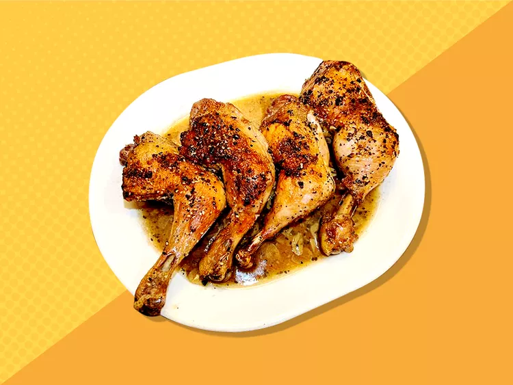
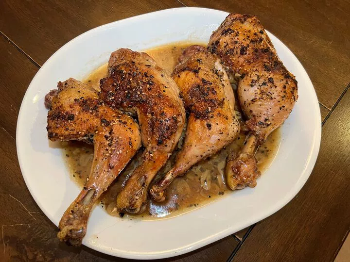
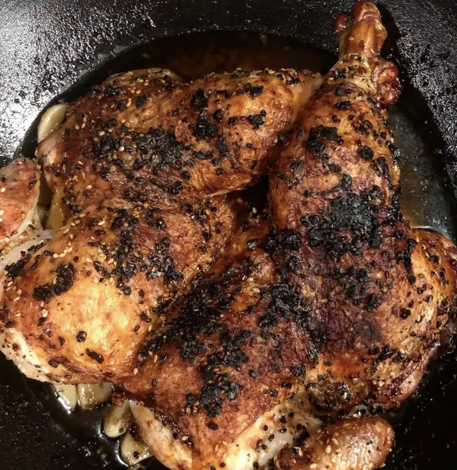

Here's the 1-ingredient upgrade he uses to make it.
By Alexandra Domrongchai Published on April 10, 2026

Credit: Dotdash Meredith / Janet Maples
My dad is great at a lot of things, but if there's one thing that he truly excels at, it's roasting a great chicken. Over the years, he has experimented with almost every spice known to man, but none compares to his signature (and simple) creation: his famous Everything Bagel Roast Chicken.
When I say famous, I mean everyone within a 10-mile radius of my hometown knows about this chicken. It's my dad's go-to meal for a quick, impressive main dish that always leaves people amazed and begging for the recipe, despite being made with just a handful of ingredients.
This recipe was born during the everything bagel seasoning phenomenon, when people couldn't get enough of adding this seasoning to everything from dips to eggs. My dad, being the culinary genius that he is, had the smart idea one night to add everything bagel seasoning to a roast chicken, as it already has a plethora of ingredients—poppy seeds, sesame seeds, dried garlic flakes, dried onion flakes, and kosher salt—that complement roast chicken, but in one convenient bottle.

The most remarkable thing about this dish (aside from its rich, savory flavor) is that it is so simple and practically guaranteed to turn out great. You can make it with any cut of chicken—thighs, breasts, whole, and quarters—and after it's roasted, the chicken leaves an excellent gravy that pairs perfectly with potatoes, broccoli, green beans, or nearly any other side.
Everything Bagel Roast Chicken is a dish that never fails to impress, and it's a staple in our family's weekly dinner rotation. And now that I live away from home, I finally begged my dad to give me the recipe. It's now on rotation in my kitchen, and I'm confident it'll become a family favorite in your home, too.

The cut of chicken that you use for this recipe is flexible. On a busy weeknight, my dad opts for leg quarters because they are usually the cheapest at the grocery store and pack a ton of flavor.